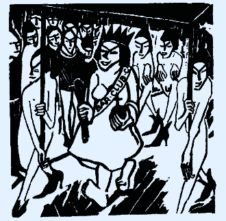
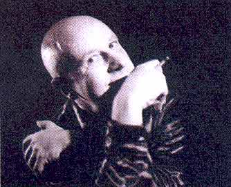

| August 2003 |
 |
| Illustration: Michell Ell/Vesterskov |
Se mig, føl mig, og pis så kommercielt på mig. Det er selve rygraden i homoernes opkørte paradenummer. Så husk at medbringe dine egne øl til paraden, det kunne gøre en forskel.
Den første Pride jeg husker, var frihedskæmperen Herta som trans ned gennem Strøget i København. Det pisregnede, skiltet var vådt og slasket og bøssetegnet var løbet ud. Jeg tror, der var femten mennesker i alt, våde og forskrækkede, men også lidt stolte over at de i det hele taget turde give sig til kende som bøsser. Makeup'en løb på Herta, som var den eneste, der havde gjort lidt ud af sig selv. Resten var bare helt anonyme, de skulle ikke skille sig ud, for der var ingen til at beskytte dem, hvis og når de fik bank. Jeg ved kun, at jeg var stolt over, at nogen af indre nødvendighed skilte sig ud fra normen.
Retten til forskellighed
I dag vil vi ses som individuelle personer, og der skal tages stilling til hver vores fortælling, og det lyder fornuftigt, men vores adfærd bærer alligevel ikke præg af forskellighed. Retten til forskellighed viste sig at være retten til at ligne heteroerne. Vi vil alligevel helst være som alle andre, og det gør ikke noget, at vi ikke er, bare vi ligner. Så helt reelt, hvad er det vi er så stolte af? Så stolte at vi er tvunget ud på gaderne for at udbasunere den stolthed, vi ikke længere kan holde tilbage. Er vi også stolte af, at vi er højrehåndet, eller venstrehåndet? Kun hvis vi har haft et handicap og har overvundet det, kan jeg se grund til stolthed. Så hvis vi betragter vores seksualitet som et handicap, som et åg, som noget helt forkert, noget vi nu er helbredt fra, så kan jeg se idéen i at fejre os selv. Vores lave selvfølelse, er det det vi skal ud på gaderne og fortælle om? Vores konstante paranoia der tvinger os i evig forsvarsposition, er det det, vi skal berette om? Hvad er det egentlig, vi skal berette om?
Tilbagestræbende myter
Skal vi starte med skrønerne? Vi er stolte af, at vi er anderledes, og det er sjovt at sige så højt, at andre hører det. Men alt viser med stor tydelighed, at vi er mere end tilpasningsvillige i alle situationer. Vi tager ikke engang vores nutidige situation på os. Vi er i bund og grund tilbagestræbende - vi har en forældet virkelighedsopfattelse. Når ægteskabet bliver afløst af singleliv, så tager homoerne ægteskabet på sig som en religiøs bodshandling. Vi halser efter heteroerne, og selvfølgelig skal vi have de samme menneskerettigheder, men det betyder på ingen måde, at vi skal have de samme normer.
Kulturelle landvindinger
Og nu hvor homoerne er gået mainstream, og der ingen grund er til at skjule sig mere, kan jeg slet ikke indse, at der er noget farligt i at springe ud i Danmark i dag. Vi er blevet en del af "deres" virkelighed. Vi eksisterer, vi er synlige, var det ikke det vi ville være? Historisk set blev homokulturen således en kort kultur. Der er efterhånden intet der tyder på, at nogen videre udvikling vil finde sted. Der skal være tale om kulturelle landvindinger, om nye manifestationer, der undersøger ukendt land, ellers er der ikke tale om en levedygtig kultur. Det er for længe siden, at der skete noget, der kulturelt var epokegørende. Vi befinder os nu i småtingsafdelingen, hvor vi kun kan tale om mode og stil, om anti-mode og anti-stil. En kultur, hvor de barberede nosser og neonfarvede neglelakker, er det mest epokegørende vi kan fremvise kulturelt.
Go underground!
Engang, og det er ikke så længe siden, havde vi noget, vi kaldte for undergrund, og det kunne så være steder, film, teater og musik. Men der var virkelig en subkultur, man var fælles om, en protestkultur, hvor optog og demonstrationer var en del af kulturen. Jeg har på fornemmelsen, at der nu er mere brug for en homo-sub-kultur, end der længe har været før. Go underground! Dér findes din kulturelle virkelighed. Du kan kun lære af din historie, hvis du selv lever den. Det kan godt være, at du ikke kan lide din undergrund, at den er lidt for våd og klam, lidt for frivol og påtrængende, alt for selvudleverende efter din smag, for blufærdighedskrænkende. Og lugter den ikke også lidt af lort? Eller er det pis den lugter af?
Kamp?
Der er stater i USA, hvor homoer først i år har fået lovmæssigt grundlag for at bolle sammen. Det er noget af et fremskridt, at de ikke længere kan retsforfølges for at elske hinanden, de har vundet en sejr, så hvis vi skal ud og fejre noget er det, at undertrykkelsen på verdensplan bliver mindre og mindre. Men her i landet står og hopper vi mentalt og kulturelt på samme sted. Lad os vente med at fejre os selv indtil vi igen har gjort et stykke arbejde, der rykker i verdensbilledet. Lige nu er vi for længst overhalet af andre landes frigørelser, flere lande har for eksempel fået en meget bedre adoptionslov, end den vi har. Jeg har ikke selv lyst til at adoptere noget eller nogen, men ikke at have rettigheden finder jeg er en diskriminerende mangel på mine menneskerettigheder. Så jeg indser, at jeg skal være solidarisk, og for mit vedkommende ikke på grund af børn, men på grund af mine fundamentale rettigheder som menneske, til frit at træffe mine egne valg, også på adoptionsområdet. Seksualpolitisk vil jeg ikke længere begrænses af en diskriminerede lovgivning, for så længe den lovgivning findes, er jeg en andenrangsborger i mit eget land.
Kan man se det på os?
Kan homoer spotte andre homoer ude på gaden? Har homoer fået en slags 8. sans som ligger i vores homogener, et talent til at spotte andre homoer på mindst 100 m. afstand? Er homoer mere feminine eller mere butch end alle andre af samme køn? Eller har vi generelt bare en bedre smag? Jeg tror ikke, at homoer er født med nogle specielle sanser og kønsspecifikke evner, som ikke alle andre også har, men til gengæld har de andre heller ikke noget, som jeg mangler. Men jeg tror på, at kulturelt er det forskellige normer, vi arbejder ud fra. Vi når aldrig frigørelsen, fordi vi konstant påtager os myterne om os selv, vores sanser og vores adfærd, og så er det sgu lige meget, om vi alle sammen bliver straight acting, vi tror stadig på historierne.
Freakshow
Hvis vi render ud i gaderne og råber, at vi er stolte, vi er stolte, så vil vi ikke engang selv tro på det, for vi fornægter værdierne i vores egen subkultur. Der er stadig nogen, vi synes er lidt for homoede, nogen vi synes godt kunne styre sig lidt med deres hvinen og feminine kropsholdninger i dagligdagen, eller det modsatte, som muskelmænd på hormonpiller. Til Priden hiver vi dem frem og udstiller dem som de freaks, vi synes, de også er. Så længe vi ikke er solidariske med alle i vores kultur, fornægter vi dele af os selv, og så er det, at jeg har svært ved at forstå, at der er andet end størrelsen på vores selvfornægtelse og mængden af livsløgne, vi kan være sammen om at fejre. En eskapisme i hvinende pink, på discodrugs? Hvor i helvede er vi henne lige nu?
 |
| Knud Vesterskov |
Fordi en kultur er død, betyder det ikke, at ritualerne ophører. Det ser vi med Danish Mermaid Pride. Det skal være festligt, folkeligt og fornøjeligt, og formen ligger så fast, at den kan gentages år efter år - en festlig gentagelse med vokseværk. Det lykkes ikke hver gang liget bliver vendt. At kalde det en kulturmanifestation, vil nok være at overdrive lidt, men overdrivelse er også, hvad det hele går ud på. Hvis homoer har en situationsfornemmelse, så er det ikke den, vi viser her under paraden.
Har vi et valg?
Sørgeligt men sandt, der er ikke andet der kan betegnes som kulturindslag i København, end den barejerne kører frem med. Vi får James Bond aften uden fremmøde. Mexicaner aften med sponsoreret sprut som et reklameindslag med gratis prøvesmagning der sætter stemningen i vejret. Vi stemmer løs om den bedste homoøl, og bryggeriet bliver så glad for, at barejerne er avant-garde og dumme nok til at hoppe på reklametricket, og kalder det en folkelig kulturbegivenhed. Er der inflation i kulturbegrebet? Vi fester og har det sjovt, og på de helt store aftner vælger vi MrGay eller Miss Copenhagen, alt sammen til 70'er Disco, som vi jo elsker så højt. Vi skal også vælge den kønneste bartender, så hvorfor klage? Vi har mange valg i vores ellers så grå tilværelse. Hvad mere vil vi ellers have, måske lige årets boyfriend, for vi kan få hvad vi vil, bare økonomien hænger sammen og det hele til sidst ligner en børnefødselsdag. Kan for 200,- kr. indkøbte serpentinere gøre det hele til en kulturbegivenhed?
Den kultur vi fortjener
Der er kamp på liv og død mellem barejerne, for selv om flere barer åbner. Vil kundegrundlaget ikke blive større af den grund. Det er om at holde på kunderne, og her sætter fantasien ingen grænser. Der bliver hængt spøg og skæmt balloner op under loftet, flest lysserøde, og så skal begivenheden gøres til en event, et kulturelt statement som så bliver opreklameret i homopressen. Vi har en kommerciel homokultur her i København. Måske den kultur vi fortjener. Selv om barejerne indædt bekæmper hinanden, så er der alligevel noget de kan blive enige om, bl.a. at der må flere homo-turister til København om sommeren. Og det skal Priden sørge for, og alle udefra kommende festligheder stoppes. Barejerne gider ikke, den dag, at stå i en halvtom bar og vide at der er godt gang i byen, men et helt andet sted, for de tror stadig, at de har monopol på de penge bøsserne bruger. Det er uhyggeligt, at barejerne har den opfattelse, at de har patent på hele Priden, at det kun er på deres betingelser, at noget finder sted den dag og nat. Jeg har hørt, fra en lille fjer, at barejerne selv tror at de er medbestemmende om hvem der kan deltage i selve paraden. Det er både komisk og uhyggeligt at fem høns kan opnå en så mafialignende struktur. Det er der ingen som tror på, vel?
Barejernes selvforherligelse
Barejerne ved godt at det er deres Pride, uden dem ingen Pride, men jeg kan ikke indse at det berettiger dem til på tværs af seksualiteten at misbruge Priden til at fejre sig selv. Et år var dronningen i Priden Britta fra Cosy Bar, og hun har ingen kvalifikationer ud over, at hun tjener fede penge på bøsserne. Hun giver så et bidrag til Priden, så hendes selvforherligelse kunne udstilles med pomp og pragt. Unge bøsser stod så smilende på vognen og var helt ude af takt med musikken og situationen. De fejrede hende på livet løs, mens Britta stolt vinkede løs til både højre og venstre. Har konen virkelig ingen situationsfornemmelse, og kunne bøsserne på vognen ikke se det latterlige i hele set-up'et, bare at være ludere der frivilligt legede marionetter når heterokonen alligevel betalte gildet. Jeg glæder mig til at se, hvem af barejerne der mister jordforbindelsen i år og lader sig hylde af hele Priden. Forhåbentligt bliver det en homo i år, for så er det i det mindste ikke overpinligt og helt så usmageligt.
Kopimodellen
Vi har som homoer ikke kunnet sejre over selvundertrykkelsen og selvhadet. Men vundet, det har vi, det er der vist ingen, der vil betvivle, når vi fejrer det med en stolt parade i international stil, eller? Danish Mermaid Pride vil helst ligne karnevalet i Rio, eller i det mindste et kopi af den amerikanske model, eller bare en kopi af hvilken som helst i forvejen eksisterende kopi. Der er ikke noget som helst personligt over paraden, ikke nogen som helst selvstændig tænkning ligger bag hele konceptet. Det er en hjernedød gentagelse af det kommercielle paradenummer, som også kiksede sidste år. Jeg tror, vi burde fortælle kommunen, at de skal holde deres penge tilbage. I det mindste indtil vi får en Pride med et koncept, der kunne give genlyd ude i verden, for en københavnsk Pride kan sagtens markedsføres ude i verden, men ikke med et kopiprogram .Pengene burde stoppes, indtil kvaliteten er i orden. Det kan ikke være nok, at en flok homoer græder snot på borgmesterkontoret og vil have penge til deres videre selvundertrykkelse.
International discountmodel
Klaus Bondam udtaler sig storladent om, at "vi kan opnå international opmærksomhed, hvis vi kan komme op og ligne det man ser i Berlin, London og Paris". Manden har et stort komisk talent. Jubeloptimist uden realitetssans. Hele Danmark har tilsammen ikke størrelsen af en af de omtalte byer, og de byer har et kæmpe opland med millioner af mennesker, noget Danmark ingen udsigt har til foreløbig. Kvantitativt kan vi ikke nå dem til sokkeholderne, så det er helt sikkert ikke den måde, København kan gøre sig internationalt gældende på. Hvad med kvaliteten? Skulle vi prøve det bare for én gangs skyld? For vi kan altid falde tilbage i vanen med at være andensortering i både tanke og handling. Igen stiller Priden op med en naiv idealisme mod alle odds. Det ville være mere barmhjertigt at give hele paraden dødsstødet, få den afviklet og erstattet med noget selvstændigt vi kunne være stolte over. Men det kræver selvfølgeligt, at vi har nogle kreative, selvstændige og nytænkende hjerner. Nogen der kan se ud over sølvglimmer, minishorts og grandprix musik.
Anonyme kloner
For at deltage i paraden skal man foretage nogle essentielle valg og bruge mindst tre måneder på et hektisk work-out program. Første valg er, hvilken bar skal man støtte, hvem skal man være plakatsøjle for? Og så kommer det svære, skal man smøre sig ind i fem lag selvbruner, tage cancergrillen, eller skal man vælge sølvglimmeret? De ensartede kostumer bliver udleveret af den valgte bar, så kloningen bliver perfekt, og eventuel personlighed bliver total udraderet. Det er godt for unge bøsser at stå frem, at springe ud og være stolte. Særlig når de kan gemme sig i anonymitetens maskespil. Det er ikke som selvstændige personligheder, de springer ud, men som anonyme kloner. Den ene vogn efter den anden med lettere maniske ynglinge ruller forbi med barens navn tydeliggjort, for der er ikke væsentligt forskel på de valgte idéer, det hele er bare en facade af pynt. "Mor, kunne du kende mig, det var mig der stod på den lyserøde vogn lige ved siden af podiet med barejeren"?
Når drømmen bliver virkelig
Gloria Gaynor, 70'ernes store discodronning, kommer til byen under Priden. Det har ganske vist intet med Priden at gøre, hun var allerede booket i forvejen. De anbefaler den bare i mangel af et selvstændigt initiativ - og til en pris på 293,- kr. inklusiv gebyr. Endelig kan du møde (i)konen Gloria Gaynor til en familievenlig gallafest - heteroerne har nemlig heller ikke fået noget at vide om, at det skulle have noget med homoer at gøre. Det er en smuk drøm der bliver til virkelighed, for endelig mødes vi, på tværs af køn, alder, farve, nationalitet og seksuel orientering, og det er selveste Dan Rachlin, der fører dig gennem drømmen. God fornøjelse! Det er kun en skam, at fattigrøve ikke kan være med. Fattigrøve som så i stedet kan nyde discountshowet på Rådhuspladsen. Det er også glimrende, at vi her har vor egen Tina Turner, når idéen med hele paraden er kopi over hele linien. Der skal selvfølgelig også være plads til kopibands, der spiller Grand Prix melodier. Vi ville slet ikke kunne genkende os selv uden Grand Prix. Vi ville få et identitetsproblem.
Bunden er nået
Jeg vil vove den påstand, at hele Priden, som den ser ud nu, er udtryk for den laveste fællesnævner, en hån mod selvstændigt tænkende homoer, og allervigtigst, en grov kommerciel udnyttelse af homosolidaritet. Hvis der stadig er en lille anarkist tilbage i dig, så husk at medbringe dine egne øl til paraden, det er kun med pengepungen vi kan håbe på en forandring, og enhver forandring kan kun blive til det bedre.
Skribent:Knud Vesterskov
www.panbladet.dk/artikel/85
Print denne side